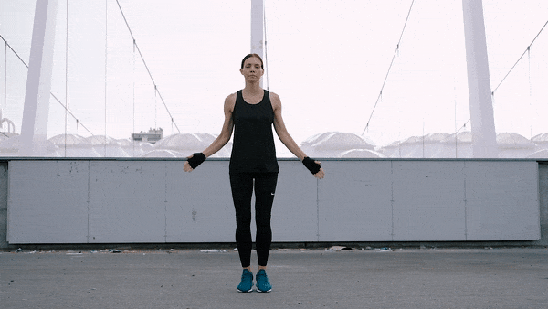
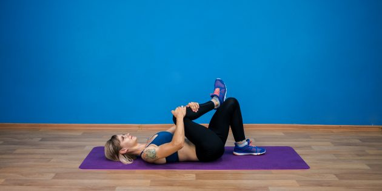
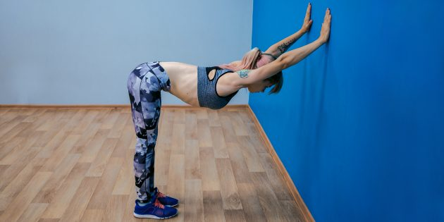

FIFTH DAY
Пятница
Программа:
1. Суставная разминка
Наклоны и повороты головы, вращение плечами, локтями и запястьями, наклоны корпуса в стороны и вперёд, вращение тазом, вынос бедра в сторону, вращение коленями и стопами. Выполняем по 10 вращений (наклонов) в каждую сторону. На всю разминку уйдёт не больше 5 минут.
2. Разогрев
-
прыжки Jumping Jacks — 30 секунд
 -
бег на месте — 30 секунд

-
прыжки через скакалку — 100 раз
(если нету возможности, то пропускаем)
3. Круговая тренировка № 1
-
5 отжиманий с широкой постановкой рук
-
5 обратных отжиманий

-
10 приседаний с выпрыгиванием
-
30 секунд планки + 30 секунд отдыха
Выполняйте упражнения в размеренном темпе, старайтесь не останавливаться и свести отдых к минимуму. Выполните шесть кругов следующих упражнений:
4. Круговая тренировка № 2
-
бёрпи
-
прыжки через скакалку
(если нету сказалки делаем бег на месте с высоким подниманием колен, как на примере, только темп медленнее)
-
скалолаз
-
Jumping Jacks
-
чередование ног в выпаде
Вы делаете столько упражнений, сколько сможете за 30 секунд, затем 30 секунд отдыхаете. Выполняете два круга:
5. Растяжка
-
Растяжка грудных мышц

-
Растяжка передней части бедра

-
Растяжка ягодичных мышц
 -
Растяжка бицепса бедра

-
Растяжка в позе прямого угла
 -
Бабочка